AI Academy · Level 1 · Grade 6 · Week 14 · Student lesson
Build a Human Classifier
Learn to understand, design, build, test and explain AI systems responsibly.
Project: Helpful Classroom Sorter
Before you start
Week 13: agreement with examples does not prove a rule is complete.
Plan time to read, investigate and explain. Keep predictions separate from observations.
Student lesson · 1 of 16
Your mission
Your learning target
I can construct a classifier with a stated input format, selected rule and recorded output.
I can trace valid, boundary and invalid inputs through different paths.
I can distinguish an input check from evidence that a prediction is correct.
Remember before reading
Close your notes first. A rough first answer helps us choose the right starting point; it is not a score for your ability.
Without opening the old lesson, explain one key idea from Learning from Examples. Give an example and a mistake that the idea helps you avoid.
Without opening the old lesson, explain one key idea from Repeating Efficiently. Give an example and a mistake that the idea helps you avoid.
Without opening the old lesson, explain one key idea from Features: Useful Clues. Give an example and a mistake that the idea helps you avoid.
After trying, check the relevant lesson or ask your teacher. Change the part of your explanation that the evidence shows was wrong.
Classification maps features to a category using a decision boundary.
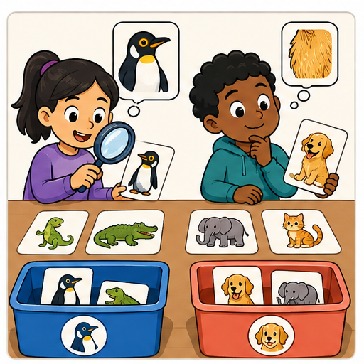
Learner name:
Readiness for the connected explanation
A fitted rule predicts tall at a height of at least 6 cm and short otherwise. Predict at 5 and 6 cm. What should you check before applying it to a blank height?
This week’s end goal
By the end, I can build a complete classifier that validates inputs before predicting.
Student lesson · 2 of 16
Notice the evidence
PICTURE STORY
Look Closely Before You Explain
Pictures give clues; evidence tells us what the clues mean.

What do you notice?
Name three visible details without explaining them yet.
Circle the detail most connected to the system's decision.
Name one detail that may be decoration or distraction.
Make a first prediction and state the clue that supports it.
My observations, prediction, and evidence:
A closer explanation
Your task is to build a paper classifier that another learner can operate without guessing your instructions. It will predict short or tall for imaginary towers. Use the threshold of 6 centimetres selected after adding the height 5 short example in Week 13. Name this selected model Tower1.
Write an input contract: one height recorded as a whole number of centimetres from 1 through 10, including both endpoints. Require the unit cm to be shown. This is a classroom design choice about what the procedure accepts. It is not a claim that every accepted height appeared in fitting or that towers outside this range cannot exist.
A complete classifier needs instructions for checking the input, applying Tower1 when the input is accepted, and recording the outcome. It must also say what happens when the input fails a check. The threshold alone does not provide these surrounding instructions.
Student lesson · 3 of 16
See how it works
VISUAL MECHANISM
Input → Process → Output
Follow the information instead of imagining magic inside the machine.
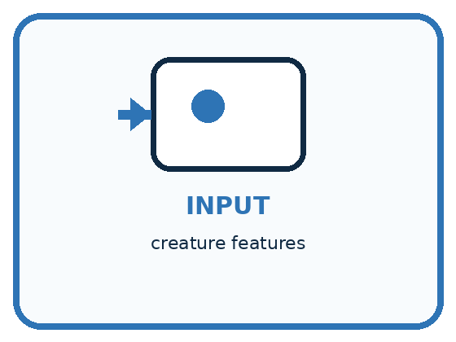
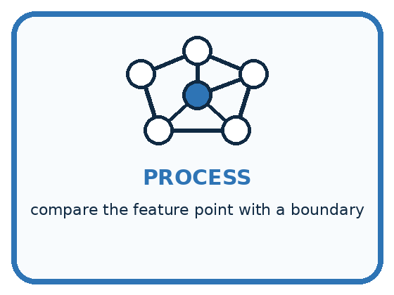
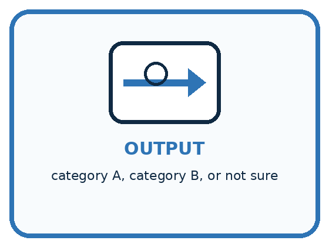
INPUT creature features
PROCESS compare the feature point with a boundary
OUTPUT category A, category B, or not sure
Draw a fresh example with all three stages:
A closer explanation
Three records through the Tower1 classifier
For every record, first check that a height is present and its stated unit is cm. Then check that it is a whole number from 1 through 10. If any check fails, record no prediction and the reason, then stop processing that record. Do not continue into the threshold comparison.
If all checks pass, compare the height with 6. At least 6 gives the prediction tall; otherwise give short. Record the original input, model version Tower1 and the prediction. For a rejected record, record the original input, Tower1, no prediction and a reason. Tower1 identifies the intended model even when its threshold was not used.
Connect the picture and the explanation
Point to the input, the deciding step and the result in this week’s visual. Explain the same step in ordinary words. A picture helps when you can say what each part represents.
Student lesson · 4 of 16
Compare the cases
PICTURE GALLERY
Four Cases, Four Clues
Use the visual cue, then read the evidence carefully.
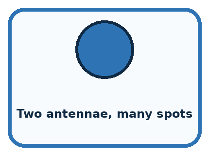
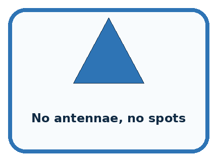
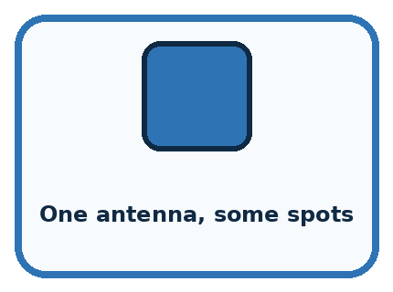
CASE 1 — Two antennae, many spots Clue: far inside region A. Meaning: stable A prediction.
CASE 2 — No antennae, no spots Clue: far inside region B. Meaning: stable B prediction.
CASE 3 — One antenna, some spots Clue: near boundary. Meaning: uncertain.
CASE 4 — New wing feature Clue: not represented on map. Meaning: boundary may be incomplete.
Which two pictures are easiest to confuse? What evidence separates them?
Change one thing in the pictured case
Change: Provide length 9 with unit mm.
Prediction: Request clarification rather than predicting long.
Reason: RibbonR requires cm; the unit mismatch fails its declared input contract.
Student lesson · 5 of 16
Words that unlock the idea
VOCABULARY
Words You Can See and Use
The badge is a memory cue; the definition does the real thinking work.
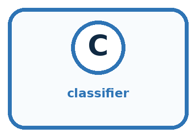
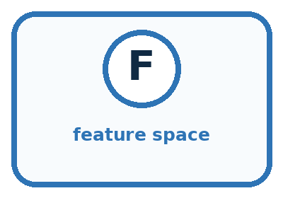
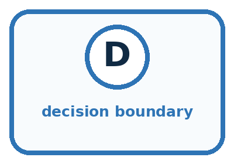
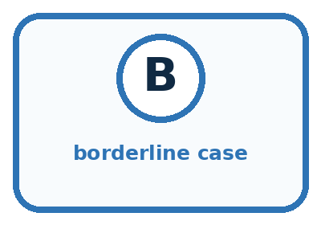
| Word | Meaning | My example |
|---|---|---|
| classifier | process that predicts a category | |
| feature space | map whose positions represent feature values | |
| decision boundary | place where predicted class changes | |
| borderline case | input near or across competing regions |
Misconception detective
CLAIM TO REPAIR Anything on the same side must truly belong to that category.
Use one vocabulary word and one piece of evidence to repair it:
Words used in the closer explanation
| Word | Meaning |
|---|---|
| Input contract | The format and conditions an input must satisfy for a procedure to accept it |
| Validation | Checking whether an input satisfies the stated contract |
| No prediction | An explicit outcome when the classifier does not assign a category |
| Model version | A name that identifies the particular model used for a prediction |
Student lesson · 6 of 16
Follow a worked example
WORKED EXAMPLE
Watch the Reasoning, Not Just the Answer
Every step connects a claim to observable evidence.

STEP 1 — OBSERVE creature features
STEP 2 — TRACE compare the feature point with a boundary
STEP 3 — CONCLUDE category A, category B, or not sure
What new evidence could change this answer?
A closer explanation
| Input | Contract result | Outcome |
|---|---|---|
| 1 cm | Accepted at lower endpoint | Predict short |
| 9 cm | Accepted | Predict tall |
| 10 cm | Accepted at upper endpoint | Predict tall |
| 0 cm | Outside 1 through 10 | No prediction |
| 60 mm | Unit is not cm | No prediction |
| 4.5 cm | Not a whole number | No prediction |
A valid 9 cm input receives a tall prediction, but the input check does not establish that the prediction matches its comparison label. Validation checks the contract. Evaluation checks predictions against appropriate evidence. Keep these questions separate.
Sixty millimetres equals six centimetres, but this version accepts cm records only. It does not contain a conversion step. Ask for a correctly recorded cm measurement or deliberately design and check a conversion step in a new version. Do not silently treat the digits 60 as centimetres. A missing height must not become an invented zero either.
Learn from the worked case
Cover the result before checking it. Say what is given, choose the procedure, and follow one step at a time. Then uncover the result and explain your first mismatch. Ask why a step is allowed, not only what number it produces.
A pictorial worked case: Build a Human Classifier
A fictional ribbon sorter uses a fixed instruction card called RibbonR.
The facts we will use
Valid input: whole-number length from 0 to 15 with unit cm.
Predict long at least 9 cm; otherwise short. Missing, wrong-unit or out-of-range values request clarification.
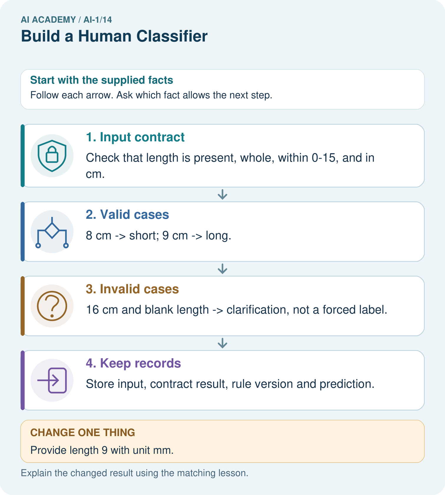
Read the picture one step at a time
Why this result follows
A prediction boundary answers a different question from input validation. Length 9 passes the contract and meets the long boundary. Length 16 must not receive long merely because it exceeds 9: it violates the allowed range first. Zero is permitted and receives short.
What this example does not establish
Contract validity does not prove the predicted category agrees with a checked reference label.
Read the labelled picture: Trace 0 cm and explain why clarification is different from predicting short.
Change one thing: Provide length 9 with unit mm. Predict the result before checking the explanation. What remains the same?
Student lesson · 7 of 16
Find and repair a mistake
COMPARE
Same Result, Different Reason
A comparison helps reveal the true concept boundary.
| Case | Evidence | What it shows |
|---|---|---|
| Two antennae, many spots | far inside region A | stable A prediction |
| No antennae, no spots | far inside region B | stable B prediction |
| One antenna, some spots | near boundary | uncertain |
| New wing feature | not represented on map | boundary may be incomplete |
Repair two tempting claims
CLAIM A Anything on the same side must truly belong to that category.
Repair:
CLAIM B Only one possible boundary can fit the examples.
Repair:
A closer explanation
The classifier reports a prediction or no prediction. It does not decide what a person must do with a tower. A separate classroom procedure might ask someone to remeasure a rejected input or compare a prediction with a recorded label. Write that action separately from the predicted category.
No prediction is not a third tower size. It records that this procedure did not assign short or tall. Count and investigate such records when evaluating the whole system; hiding them could make a system look more useful than it is.
Student lesson · 8 of 16
Practise together
GUIDED PRACTICE
Try It, Check It, Explain It
Use support now so you can succeed independently later.

Explain how the picture story demonstrates this idea: Classification maps features to a category using a decision boundary.
Use a fresh example to explain classifier.
Trace a new input → process → output example.
Find and repair the error in: Only one possible boundary can fit the examples.
Invent one edge case and name the safe response.
A closer explanation
Write the procedure as numbered steps or connected boxes with labelled branches. Give it to a partner who follows only what you wrote. The partner should record each check and stop point, including equality at the threshold and at both accepted range endpoints.
A partner finding an unclear branch gives useful design feedback. Revise the instruction and retrace the affected examples. Keep the model name and threshold visible so a change to the fitted rule is not confused with a correction to an instruction.
Practise with less help: Construct both outcome paths
Use workbook W2 for the connected example “Constructing a classifier”. First fill the input and rule boxes. Try the middle steps before asking for a hint. After a hint, try the next step yourself.
| Plan | Do | Check |
|---|---|---|
| What is given? Which rule or procedure applies? | Record each intermediate step. | Does the result follow? What remains unknown? |
Explain your trace to a partner. Your partner points to one step to check. Swap roles on the next case. Each person writes their own explanation.
Check your reasoning
Use the worked case for Constructing a classifier. Proposed explanation: “Any numeric input must receive a category”. Decide whether this explanation is supported. Point to the step or supplied fact that decides; explain your repair if needed.
Answer on your own before discussion. If you are unsure, say which step you need help with.
Explain the picture
Trace 0 cm and explain why clarification is different from predicting short.
This is supported practice. Keep the separately named independent case for an attempt before feedback.
Student lesson · 9 of 16
Run the investigation
EXPLORER LAB
Mystery Creature Classifier
Predict first, test honestly, and explain what the evidence means.

State your prediction before the result is known.
Complete the task: Classify mystery creatures and make the boundary visible.
Keep a normal case and an edge case clearly separated.
Record what happened—even when it does not match your prediction.
Explain the result, one limitation, and the next useful test.
| Case | Prediction | Observed result | What it means |
|---|---|---|---|
| Normal | |||
| Edge |
Plan → try → check
Before trying: what do I expect, and why? While trying: which step could first go wrong? Afterwards: what did I actually observe, and what should change? Keep “not run” if you only traced the procedure.
Student lesson · 10 of 16
Build your understanding
PRACTICE LADDER
Climb from Recall to Defense
Each step asks for a stronger kind of understanding.

RECALL Define classifier.
EXPLAIN Classification maps features to a category using a decision boundary.
TRACE Show the input, process, and output.
DIAGNOSE Repair: Anything on the same side must truly belong to that category.
TRANSFER Apply the idea to a new home or classroom case.
CREATE Design one revealing test.
DEFEND Give a claim, evidence, mechanism, limit, and safe action.
Student lesson · 11 of 16
Connect your project
PROJECT
Helpful Classroom Sorter
Build one coherent system across the year, one evidence-based decision at a time.

What real classroom need does this serve?
What information is necessary—and what should stay private?
What happens inside the process?
What normal and edge cases will you test?
When should it say not sure or ask a person?

My project decision:
Evidence for your project
Create a sorter instruction card covering valid values, equality, missing fields and who can resolve clarification requests.
Student lesson · 12 of 16
Show what you know
MASTERY
Fresh-Case Independent Proof
Complete this after teaching and guided practice have ended.

□ Name or draw the fresh case.
□ Trace input, process, and output.
□ State the conclusion and strongest evidence.
□ Name one limit, failure, missing clue, or fairness/privacy concern.
□ Explain one safe next action or improvement.
Independent evidence:
My level: □ Not yet □ With one hint □ Independently □ I can teach it
Student lesson · 13 of 16
Study a complete case
Week 14 Worked case
Use the supplied details to practise the weekly concept before attempting the independent question. This case extends the illustrated lesson.
The situation
A human classifier uses has wheels means vehicle on a bicycle, wheelchair, toy car and boat.
The question
Apply the rule and identify a limitation.
Worked explanation
The first three receive vehicle; the boat does not. If the intended category includes boats, the rule misses them. Define the category independently of the prediction rule.
Explain it in your own words
Which detail supports the answer, and why does it matter?
Trace the supplied case visually
Does the object have wheels?
| Evidence or stage | Value or result |
|---|---|
| Bicycle | Yes → vehicle |
| Wheelchair | Yes → vehicle |
| Toy car | Yes → vehicle |
| Boat | No → excluded by this rule |
A human classifier uses has wheels means vehicle on a bicycle, wheelchair, toy car and boat.
Apply the rule and identify a limitation.
The first three receive vehicle; the boat does not. If the intended category includes boats, the rule misses them. Define the category independently of the prediction rule.
Student lesson · 14 of 16
Try a new case independently
Independent case: Build an independent ribbon classifier
Design Ribbon1 for ribbon lengths recorded as whole centimetres from 1 through 12 inclusive, with unit cm required. Predict long at 8 cm or more and short otherwise. Write complete instructions and trace 7 cm, 8 cm, a blank length and 13 cm. Include reasons for no prediction and the model version in each record.
Attempt this case before feedback. Record any help. Earlier examples below are further practice; a case already practised with feedback cannot establish fresh transfer.
Week 14 Independent application
Close the worked explanation. Apply the idea to this different question without copying.
Use a human classifier: three sides means triangle; four equal sides means square. Classify a three-sided card and a card whose corner is hidden. When should you pause?
My answer, with a trace, calculation or supporting evidence
Create and test
Change one relevant detail. Predict the result before testing. Include a boundary or missing-information case when it helps reveal a limit.
My changed input and expected result
Connect to your project
Make the sorter's current decision boundary visible as a rule chart or feature map.
The evidence I will keep
Your teacher has the independent answer and scoring criteria. Complete the matching workbook week to keep your practice evidence together.
Transfer practice from the original programme
A classroom rule labels anything with wings as a bird. Test a bat, a penguin and a toy aeroplane. Define the target independently, then propose a next step without pretending one visual clue solves biology.
Use feedback to improve
Attempt the independent case before hints. Record whether you worked alone, used a hint or followed a model. After feedback, fix the first unsupported step and explain why it changed. A later check uses a changed case, not a copied answer.
Student lesson · 15 of 16
Your lesson route
Start with this question: A fictional ribbon sorter uses a fixed instruction card called RibbonR.
| By the end, I can | How I will show it |
|---|---|
| Construct a classifier with a stated input format, selected rule and recorded output | Explain the deciding step, show a trace or test, and state one limit. |
| Trace valid, boundary and invalid inputs through different paths | Explain the deciding step, show a trace or test, and state one limit. |
| Distinguish an input check from evidence that a prediction is correct | Explain the deciding step, show a trace or test, and state one limit. |
Remember → watch and explain → try with help → investigate → try independently → keep project evidence. Your teacher may spread this lesson across several classes.
Keep your first prediction. Compare it with what the evidence shows and explain any change.
Student lesson · 16 of 16
Finish and return
Close your notes. Explain this goal in your own words: Construct a classifier with a stated input format, selected rule and recorded output
If you are unsure, return to the worked picture and explain one arrow. If you are ready, change an input or assumption and justify your prediction.
Save your workbook evidence. At the next review, try a different case before opening your old answer.